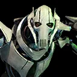

General Grievous
Aggressive Attacker that grows increasingly stronger as the Droids around him fall. Although he hates being called a droid, he counts as one in combat.
Aggressive Attacker that grows increasingly stronger as the Droids around him fall. Although he hates being called a droid, he counts as one in combat.
Deal Physical damage to target enemy and inflict Healing Immunity for 2 turns. This attack can't be evaded or countered. If the target was already debuffed deal 30% more damage. Grievous' attacks deal damage based on his Max Health instead of his Physical damage.
Deal Physical damage to all enemies (based on Grievous' Max Health), inflict Target Lock for 2 turns, and remove 30% Turn Meter from them. This attack can't be evaded.
Gain Health Steal Up for 2 turns, then deal Physical damage (based on Grievous' Max Health) to target enemy and Stun them for 1 turn. If the target was already debuffed they lose 10% of their Max Health (excludes raid bosses and Galactic Legends), which can't be resisted, and Grievous gains 10% Max Health for the rest of the encounter. This attack can't be evaded.

All enemies have -40% Critical Avoidance and -50% Defense. Whenever a Dark Side Droid ally is resisted, that Droid gains 10% Potency (stacking) for the rest of the encounter. Target Locked enemies can't counter attack.
When a Target Locked enemy is damaged, each Droid and each Separatist ally gains 2% Turn Meter, doubled for Grievous. When damaged by an attack, Dark Side enemies lose 5% Turn Meter, and Light Side enemies lose 2% Potency (stacking).
At the start of Grievous' turn, all other Droid allies take damage equal to 8% of his Max Health, doubled for Light Side Droids and he gains 5% Max Health and Potency for each other Droid ally for the rest of the encounter. This damage cannot defeat characters.
At the start of every character's turn, if Grievous is below 100% Health, he dispels all debuffs on himself and inflicts Marked on the other healthiest Droid ally until the end of the turn. Whenever a Droid or Separatist ally is defeated, Grievous dispels all debuffs on himself, resets all ability cooldowns, and gains 1 bonus turn.